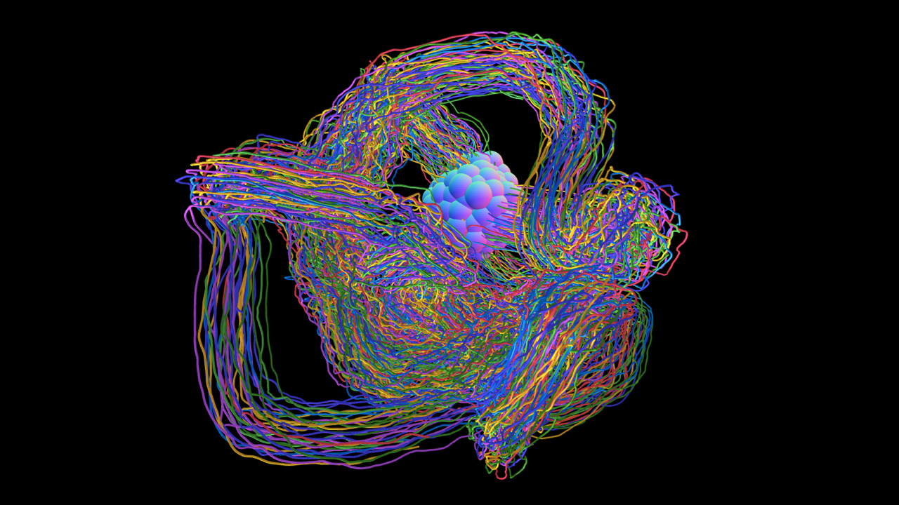

At the first glance, AUAE looks like an image of a connectome. But it is just trajectories of particles that interact with each other. After some iterations are passed, the positions and types of particles become the input of a simple autoencoder, and the number of clusters of particles determines the autoencoder's network architecture. The low dimensional representation of the input sometimes can generate another plausible initial setup of particles. This forms a negative feedback loop, a.k.a. a cybernetic system that is visually intriguing but has no other usages. Furthermore, even if the autoencoder is removed from the system, it doesn't make big differences at all. This work is an homage to 'Useless machine' and a recursive satire.